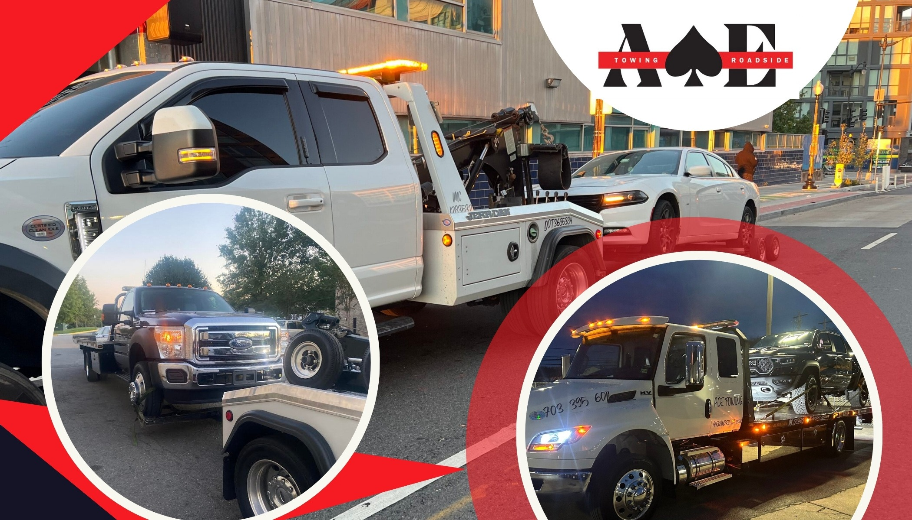
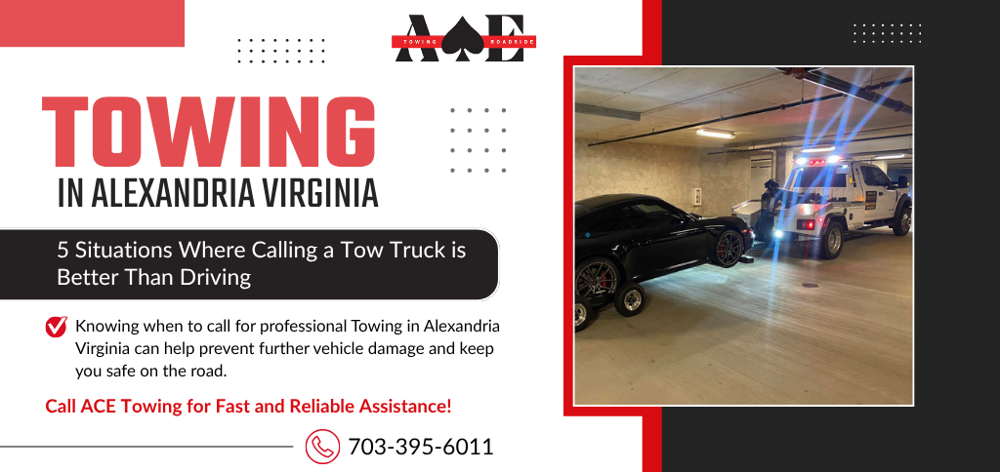

Fast, professional, and dependable towing services throughout Alexandria, Virginia.
Call Now: (703) 395-6011ACE Towing provides fast and professional towing in Alexandria, VA for drivers who need immediate assistance. Whether your vehicle has broken down, you've been involved in an accident, or you need roadside assistance, our experienced team is available 24 hours a day, 7 days a week.
Our tow truck operators serve residential neighborhoods, business districts, highways, and surrounding communities throughout Alexandria and Northern Virginia.

ACE Towing proudly serves drivers throughout Alexandria, including Old Town Alexandria, Eisenhower Avenue, Landmark, Del Ray, Rose Hill, and surrounding communities.
Our team regularly assists motorists traveling on major roadways including Interstate 395, Interstate 495 (Capital Beltway), Duke Street, Van Dorn Street, Richmond Highway, and Telegraph Road.
Vehicle breakdowns can happen unexpectedly. Our dispatch team works around the clock to provide prompt towing assistance throughout Alexandria. Whether you are stranded on a busy highway or in a neighborhood parking lot, ACE Towing is prepared to help.
Call us anytime for dependable emergency towing services in Alexandria, Virginia.
ACE Towing is available 24/7 to help with emergency towing and roadside assistance.
Call (703) 395-6011Yes. ACE Towing offers emergency towing services 24 hours a day, 7 days a week.
Response times vary depending on traffic and location, but we strive to dispatch assistance as quickly as possible.
Yes. We offer jump starts, tire changes, lockout services, fuel delivery, and more.
Yes. Our team provides professional accident recovery and towing services throughout Alexandria.